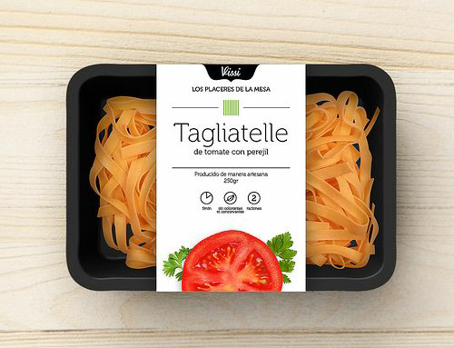

Celidad
Denominación:
Comida apta para celíacos. Este proyecto consiste en la creación de una empresa simulada: “Celicidad” que se encargará de elaborar: ñoquis, pastas frescas y facturas.
Diagnóstico inicial:
Este proyecto va dirigido al 20% de la población salteña que padece de celiaquía, la misma es una enfermedad por la cual las personas no pueden ingerir alimentos con T.A.A.C (Trigo, Avena, Centeno, Cebada)
Fundamentación:
La enfermedad celiaca, también conocida como celiaquía o enteropatía sensible al gluten, se caracteriza por una inflamación de la mucosa del intestino delgado como consecuencia de una intolerancia inmunológica y permanente al gluten ingerido de la cebada, del trigo, el centeno y, en aquellos que tienen predisposición genética a sufrir la enfermedad, también a la avena.
La enfermedad afecta tanto a niños como adultos de todas las edades.
Con este proyecto buscamos dar una solución a la problemática de que los alimentos sin T.A.C.C son de elevado costo por ser de producción no local, además nuestros productos serán elaborados a partir de mezclas de harinas de productos andinos como ser (amaranto, chía, yacón, quinoa, maca, salvado, coca, sésamo, algarroba, semilla de lino, papa andina, poroto, maíz, etc.)
Beneficiarios:
DIRECTOS: será la población celiaca.
INDIRECTOS: son el resto de la población que deseen llevar una vida más saludable por ejemplo los diabéticos, personas con obesidad, los deportistas, etc.
Definición de objetivos:
GENERAL:
- Elaborar productos aptos para celiacos con optimas características nutricionales en base a alimentos andinos, ya que los mismos aportan variedad de minerales como ser el calcio, magnesio, hierro, fósforo, zinc y vitaminas A, C, D, E y del complejo B.
ESPECÍFICOS:
- Brindar diversas alternativas a partir de la elaboración de productos sin TACC a menor costo.
- Ofrecer un producto innovador al mercado: Pastas andinas sin T.A.C.C
- Proporcionar a los celíacos varias alternativas nutricionales con un aumento de opciones de productos en el mercado y con un bajo costo por ser de producción local
Descripción del proyecto:
-
Los integrantes del proyecto serán: Arispe Erika, Gutiérrez Antonella, Gutiérrez Victoria, Poclava Naomi y Tejerina Erika. Todas somos alumnas de 4 año ciclo superior de la especialidad de Técnico en Gestión y Producción Gastronómica, por lo que disponemos con los conocimientos necesarios para llevar a cabo el proyecto.
Durante el transcurso de nuestra carrera hemos recibido el siguiente aprendizaje:
Capacidades y competencia del perfil profesional:
- Conocer e incorporar los fundamentos básicos de la ciencia de la nutrición en la elaboración de los productos.
- Conocer y manipular los alimentos de acuerdo con las técnicas de elaboración y conservación de los diferentes productos.
- Conocer las normas, estándares y procedimientos de seguridad, conservación y sanitación alimentaria.
Espacios curriculares y contenidos que ayudaran al desarrollo de la propuesta/ proyecto:
Formación ética, ciudadana y humanística general:- Lengua.
- Lengua extranjera.
- Formación ética y ciudadana.
- Ética y deontología.
- Relaciones humanas.
Formación científica tecnológica:- Matemáticas.
- TIC (tecnología de la información y la comunicación).
- Higiene y seguridad laboral.
- Organización y gestión de la producción
- Diseño orientado
- Tecnología de los alimentos.
- Formulación y evaluación de proyectos.
- Nutrición.
- Marketing.
- Bromatología.
- Sistema de gestión de la calidad.
- Análisis matemático.
- Probabilidad y estadística.
- Microemprendimientos gastronómicos.
Formación técnica especifica:- Introducción a la problemática gastronómica.
- Gastronomía básica.
- Repostería y pastelería.
- Alimentos andinos.
- Gastronomía regional.
- Repostería regional.
- Panadería y pastelería
- Gastronomía argentina.
- Panadería.
- Prácticas profesionalizantes I
- Gastronomía internacional.
- Gastronomía latinoamericana.
- Prácticas profesionalizantes II
-
Directorio: Tejerina, Erika
Departamento de finanzas: Gutiérrez, Antonella
Departamento de producción: Arispe, Erika
Departamento de Marketing: Poclava, Naomi
Departamento de Recursos Humanos: Gutiérrez, Victoria -
Empaquetado de los productos:
Logo:
Diseño del Packaging:
- Ñoquis, en caja.
- Pastas Frescas
 - Facturas

- Ñoquis, en caja.
Canales de comercialización:
- Por internet, redes sociales (Facebook: CELICIDAD Instagram: Celicidad_Jc) y un negocio en los alrededores de la plaza 9 de julio, con delivery
- Estudio de mercado
- Determinar costo de preparaciones y valor nutritivo.
Facturas:
Ingredientes:
- Premezcla 320g
- Sal c/n
- Azúcar 80gr
- Levadura 35gr
- Ralladura de una naranja
- Huevo 1
- Clara 1
- Esencia de vainilla c/n
- Manteca Pomada 55gr
- Leche 160cc
Procedimientos:
- Tamizar la premezcla con la sal, volcar en un bol.
- Agregar el azúcar, la levadura desgranada, el huevo, la clara de huevo, la ralladura de naranja, la esencia de vainilla y la leche. Mezclar muy bien hasta integrar y formar una masa suave.
- Agregar la manteca pomada, la masa quedará como terciopelo.
- Poner la masa en una manga.
- Sobre una placa aceitada hacer copitos de 5cm de diámetro dejando entre uno y otro 4cm aproximadamente.
- Con una cuchara mojada con agua aplastar con cuidado los conitos. Decorar con crema pastelera, membrillo, dulce de leche y/o azúcar negra.
- También hace con la manga palitos de 8cm de largo dejando 4cm entre uno y otro. Decorar.
- Dejar levar en lugar cálido hornear a 200° por 15min.
Ñoquis:
Ingredientes:
- Pure Instantáneo 1 paquete
- Leche Descremada 400cc
- Agua 200cc
- Aceite 3cdas
- Huevos 2
- Fécula de Maíz c/n
- Sal, Pimienta, Nuez Moscada a gusto.
Procedimientos:
- Preparar el puré instantáneo con la leche, el agua y el aceite.
- Una vez unificado el puré agregar huevos, sal, pimienta y nuez moscada.
- Ir agregando fécula de maíz de a poco hasta formar una masa lisa homogénea y que no se pegue en la mesada.
- Armar tiras del grosor deseado y cortar cada uno de los ñoquis.
- Una vez cortados pasar por una ñoquera o tenedor para marcarlos.
- Colocar en olla con agua hirviendo y sal. Retirar cuando ya hayan subido a la superficie colar y servir.
- Acompañar con alguna salsa.
Pastas Frescas:
Ingredientes:
- Premezcla 120gr
- Leche en Polvo 120gr
- Fécula de Mandioca (mas una cucharada extra para hacer el chuño con un pocillo de agua) 60gr
- Huevo 1
- Aceite 1 cucharada
- Sal c/n
Procedimientos:
- En primer lugar, mezclar lo secos.
- Por aparte preparar el chuño.
- En la mezcla de secos agregar el huevo, el aceite y el chuño. Incorporar primero con una cuchara y luego con la mano hasta lograr una masa lisa.
- Estirar la masa de unos 5 mm. Cortar los fideos y una vez listo dejar descansar por 15 min.
- Cocinar en agua hirviendo.
Pizza:
Ingredientes:
- Premezcla 500 gr
- Sobre de Levadura 10 gr
- Aceite 5 cucharadas
- Chuño de Mandioca: 400 cc de agua y 4 cucharadas de fécula de mandioca
- Sal c/n
Procedimientos:
- Lo primero que hay que hacer para preparar esta receta es el chuño de mandioca, para esto se debe mezclar el agua con la fécula de mandioca, una vez que esté bien diluida, llevar a fuego lento hasta que se transparente y tome consistencia.
- En un bol mezclar la premezcla con la levadura y la sal (tener cuidado de que la sal no tenga contacto con la levadura).
- Agregar a los secos el aceite y el chuño, incorporar primero con cuchara y luego con las manos hasta obtener una masa que se pega en los dedos.
- Estirar en una fuente aceitada, pintar con salsa de tomate y dejar leudar 15 minutos.
- Llevar a horno hasta que haga piso.
Muffins de Chocolate Rellenos con Dulce de Leche:
Ingredientes:
- Huevos 2
- Azúcar 40 gr
- Stevia 4 sobres
- Leche 30 gr
- Miel 1 cdita
- Trigo Sarraceno 90 gr
- Cacao Amargo 20 gr
- Polvo de Hornear 1 cdita
- Aceite de Coco Líquido (a temperatura ambiente) 60 ml
Procedimientos:
- Precalentar el horno a 170 grados.
- Batir los huevos junto con el azúcar, la stevia, la miel y la leche.
- En otro bowl, mezclar la harina, el polvo de hornear y el cacao.
- Integrar ambas preparaciones de a poco y sin batir, simplemente mezclar.
- Una vez que la mezcla esté homogénea, agregar de a poco el aceite de coco y mezclar hasta que quede completamente integrado.
- Colocar la preparación en moldes de muffins
Hornear por 12-15 minutos, dependiendo del tamaño. No dejar cocinar de más, ya que pueden quedar muy secos. - Rellenar.
Lemon Pie:
Ingredientes:
Para la Masa
- Premezcla 200 gr
- Huevo 1
- Mantequilla 100 gr
- Azúcar 50 gr
Para el Relleno
- Huevo 1
- Yema 1
- Relladura de limones c/n
- Jugo de 1 Limón
- Azúcar 100 gr
- Fécula de Maíz 2 cucharadas
- Agua 250 cc
Para el merenge
- Claras 3
- Azúcar 6 cucharadas
Procedimientos:
- En un recipiente integrar el azúcar con la premezcla. Cuando tengamos esto, vamos a cortar la manteca fría en trocitos y la vamos a incorporar a nuestra mezcla de secos, con las manos vamos a ir desarmando e integrando la manteca, procurando no desarmarla mucho con nuestras manos
- Cuando tengamos el arenado listo, incorporamos el huevo y mezclamos. De a poco vamos a trabajar con la mano hasta lograr una masa lisa. Dejar descansar en la heladera
- En una cazuela vamos a incorporar la ralladura, el jugo, el azúcar, la yema y el huevo completo. En un recipiente aparte vamos a diluir las dos cucharaditas de fécula de maíz con un poco de agua, para evitar que se formen grumos. Agregamos la fécula diluida y el resto del agua.
- Cuando esté todo incorporado, llevamos a fuego bajo y mezclamos hasta que la preparación comience a espesar.
- Llevar la masa a horno medio 180° hasta que se dore.
- Armar y decorar con merengue.